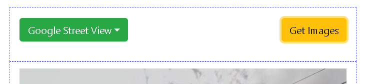
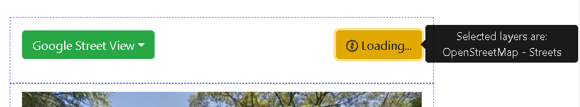
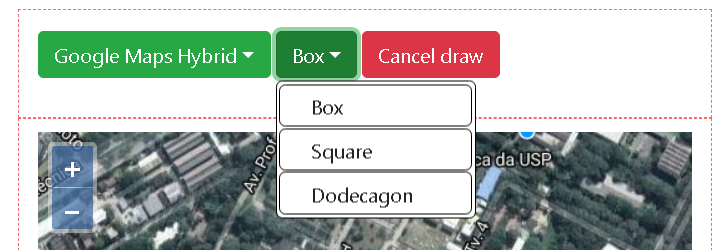

1. {% trans "The first click selects the starting point for the region of interest." %}

2. {% trans "A second click selects the region of interest, denoted by a reddish area." %}

{% trans "Contents" %}:
{% trans "INACITY have two modes of use, a simple mode and an advanced one. In the former you can choose a region by clicking at two different locations over the map to select a region" %}:
1. {% trans "The first click selects the starting point for the region of interest." %}
2. {% trans "A second click selects the region of interest, denoted by a reddish area." %}
{% trans "After selecting the region of interest just press Get Images. The platform will collect all the streets and their images and display it" %}%:
{% trans "Click at Get Images to start collecting the images for the selected region." %}
{% trans "Images are being retrieved for streets collected through OpenStreetMap." %}
{% trans "By default the shape tool selected is the box. The user can select other shapes by clicking at the shape button" %}:
{% trans "By default the box shape is selected." %}

{% trans "Clicking over the shape button reveals all possible shapes." %}
{% trans "Currently there are 3 shapes" %}: